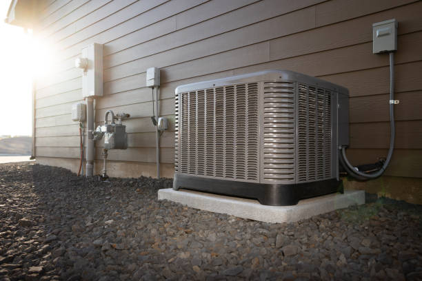

Expert HVAC Services for North Liberty, Coralville
North Liberty, located on Coralville's southern shore, presents unique HVAC challenges and opportunities for residents and businesses in this vibrant campus area community. Known for its beautiful marina, North Liberty Park, and diverse housing options ranging from campus area condominiums to traditional single-family homes, this neighborhood requires specialized heating, ventilation, and air conditioning services that understand the area's distinctive midwest characteristics. Our comprehensive HVAC services address the specific needs of North Liberty properties, considering the neighborhood's exposure to prairie air, humidity variations from the nearby Raritan Bay, and the diverse architectural styles that define this popular Coralville community. With extensive experience serving North Liberty residents, we understand how the campus area location affects HVAC system performance, the importance of corrosion-resistant equipment for midwest properties, and the energy efficiency considerations that help manage utility costs in this desirable neighborhood.

Ductless Mini Split Installation for North Liberty Properties
North Liberty' diverse housing stock, from campus area high-rises to suburban ranch homes, makes ductless mini split systems an ideal solution for efficient climate control. These systems provide optimal comfort while addressing the unique challenges of midwest living.
North Liberty residents choose ductless systems for energy efficiency in campus area properties, individual zone control for different living areas, excellent air filtration for prairie air environments, quiet operation maintaining peaceful residential atmosphere, corrosion-resistant components for midwest durability, and smart controls for convenient operation from anywhere in the home.
Our installation process includes comprehensive property assessment considering North Liberty' midwest environment, customized system design for optimal coverage and efficiency, professional installation using marine-grade components when needed, thorough testing and performance optimization, and complete homeowner education on system operation and midwest maintenance considerations.
Emergency HVAC Services for North Liberty
HVAC emergencies in North Liberty can be particularly challenging due to the campus area location and weather exposure. Our 24/7 emergency HVAC services provide rapid response to restore comfort when systems fail.
Emergency situations include heating system failures during winter midwest storms, air conditioning breakdowns during humid summer weather, storm damage to outdoor equipment, prairie air corrosion causing system problems, power outages affecting HVAC equipment, and equipment malfunctions during extreme weather events.
Our emergency response includes immediate consultation to assess situation severity, rapid technician dispatch to North Liberty locations, fully equipped service vehicles with midwest-specific parts, temporary climate solutions when permanent repairs take time, coordination with local utilities during storm recovery, and comprehensive follow-up to ensure lasting solutions.
HVAC Repair Services for North Liberty
North Liberty' midwest environment requires specialized HVAC repair expertise to address prairie air corrosion, humidity-related issues, and the unique challenges of campus area properties. Our technicians are experienced with midwest HVAC concerns.
Common repair needs include prairie air corrosion on outdoor equipment, humidity control system issues, midwest wind damage to HVAC components, electrical problems from moisture exposure, ductwork issues in campus area properties, thermostat problems from humidity fluctuations, and efficiency problems from environmental factors.
Our repair approach includes specialized diagnostic equipment for midwest environments, corrosion assessment and prevention strategies, moisture protection solutions, quality repairs using marine-grade materials when appropriate, comprehensive testing in midwest conditions, and preventive recommendations to avoid future problems.
Air Conditioning Services for North Liberty
North Liberty' campus area location creates unique cooling challenges including high humidity, prairie air exposure, and varying weather patterns. Our air conditioning services address these specific midwest considerations.
Cooling considerations include humidity control for campus area comfort, corrosion-resistant equipment for longevity, energy efficiency for summer utility management, quiet operation for residential peace, zone cooling for multi-level properties, and smart controls for optimal efficiency and convenience.
Our air conditioning services include detailed load calculations considering midwest factors, equipment selection optimized for prairie air environments, professional installation with proper corrosion protection, comprehensive system testing and commissioning, homeowner education on midwest maintenance, and preventive maintenance program enrollment.
Heating System Services for North Liberty
North Liberty' winter heating needs require systems that can handle midwest humidity and temperature variations while providing consistent comfort. Our heating services ensure reliable warmth throughout the heating season.
Heating solutions include high-efficiency furnace systems with humidity control, boiler services for campus area properties, heat pump technology optimized for midwest climates, hybrid systems for variable weather conditions, radiant heating for specific applications, and smart heating controls for optimal efficiency.
Our heating services include comprehensive system evaluation for midwest conditions, professional installation with proper ventilation, regular maintenance to prevent humidity-related problems, emergency repair services during winter storms, efficiency improvements for energy savings, and integration with humidity control systems.
Marine-Grade HVAC Solutions
North Liberty' proximity to the marina and Raritan Bay requires HVAC equipment that can withstand prairie air exposure. Our marine-grade solutions provide enhanced durability and longevity for midwest properties.
Marine-grade features include corrosion-resistant coatings and materials, stainless steel components for outdoor units, enhanced drainage systems for humidity management, sealed electrical connections for moisture protection, UV-resistant materials for sun exposure, and specialized maintenance for midwest environments.
Our marine-grade services include consultation on appropriate equipment for campus area properties, installation using midwest-specific techniques, ongoing maintenance tailored to prairie air environments, corrosion prevention treatments, and replacement of standard components with marine-grade alternatives when needed.
Heat Pump Services for North Liberty Efficiency
Heat pumps work exceptionally well in North Liberty' moderate midwest climate, providing both heating and cooling efficiency. Our heat pump services help residents achieve year-round comfort and energy savings.
Heat pump benefits include excellent efficiency in moderate midwest climates, reduced energy costs year-round, environmental benefits through reduced emissions, quiet operation suitable for residential areas, advanced features for optimal comfort, and smart controls for convenient operation.
Services include heat pump system design for midwest conditions, professional installation with corrosion protection, repair services for all heat pump types, maintenance programs for midwest environments, efficiency upgrades and improvements, and integration with existing home systems.
Indoor Air Quality for North Liberty
North Liberty' midwest location can present air quality challenges including prairie air, humidity, and allergens from the nearby park and marina areas. Our indoor air quality services create healthier indoor environments.
Air quality considerations include prairie air filtration, humidity control for comfort and health, allergen control from outdoor sources, ventilation improvements for midwest moisture, air purification for enhanced health, and fresh air management with HVAC integration.
Solutions include whole-home air purification systems, specialized filtration for midwest environments, humidity control equipment, UV light air sterilization, energy recovery ventilation, and smart air quality monitoring with automated adjustments.
Commercial HVAC for North Liberty Businesses
North Liberty' commercial establishments, including marina businesses, restaurants, and retail shops, require specialized commercial HVAC services designed for midwest business environments.
Commercial applications include marina and boat service facility climate control, restaurant ventilation and climate systems, retail space heating and cooling, campus area business HVAC needs, community facility climate control, and energy management for operational efficiency.
Our commercial services include system design for midwest business environments, installation of commercial-grade equipment with corrosion protection, preventive maintenance programs for businesses, emergency repair services to minimize disruption, energy efficiency improvements, and ongoing optimization for cost control.
HVAC Maintenance for North Liberty Properties
Regular maintenance is especially important in North Liberty' midwest environment where prairie air and humidity can accelerate wear on HVAC equipment. Our maintenance programs provide specialized midwest care.
Maintenance benefits include extended equipment life in prairie air environments, improved efficiency despite environmental challenges, reduced emergency breakdowns during severe weather, better indoor air quality year-round, priority service during storm seasons, and comprehensive warranty protection.
Our maintenance services include seasonal inspections with midwest focus, thorough cleaning including salt removal, corrosion monitoring and prevention, humidity control system maintenance, electrical protection from moisture, detailed performance analysis, and preventive recommendations for midwest conditions.

Energy Efficiency for North Liberty Homes
North Liberty residents benefit from energy efficiency improvements that address both comfort and cost concerns in the midwest environment. Our efficiency solutions provide year-round savings while maintaining optimal comfort.
Efficiency improvements include high-efficiency equipment designed for midwest conditions, smart thermostats with humidity control, insulation and sealing for moisture protection, energy recovery systems, solar-ready HVAC designs, and comprehensive energy management strategies.
Our efficiency services include energy audits considering midwest factors, equipment recommendations with midwest durability, rebate assistance for efficiency improvements, financing options for upgrades, and ongoing monitoring to ensure continued performance.
Smart Home Integration for North Liberty
North Liberty residents appreciate smart home technology that provides enhanced control over their midwest home's comfort systems. Our smart integration services offer advanced automation and monitoring capabilities.
Smart features include WiFi thermostats with remote access, smartphone integration for system control, voice control compatibility, automated humidity management, energy monitoring and reporting, integration with home security systems, and weather-responsive automation for midwest conditions.
Integration services include smart device selection and installation, system programming and configuration, home automation integration, comprehensive user training, ongoing technical support, and troubleshooting assistance for smart components.
Storm Preparedness and Recovery
North Liberty' campus area location requires specific storm preparedness for HVAC systems. Our storm services help protect equipment and ensure rapid recovery following severe weather events.
Storm preparedness includes equipment protection strategies, emergency shutdown procedures, backup power considerations, flood protection measures, post-storm inspection protocols, and rapid recovery services.
Our storm services include pre-storm equipment preparation, emergency response during storms, post-storm damage assessment, rapid repair and restoration services, insurance claim assistance, and equipment replacement when necessary.
Waterfront Property Specialization
Properties directly on the water in North Liberty face unique HVAC challenges requiring specialized solutions. Our campus area expertise addresses the specific needs of these premium properties.
Waterfront considerations include enhanced corrosion protection, specialized drainage systems, humidity management for water views, wind-resistant installations, flood-resistant equipment placement, and maintenance schedules for extreme exposure.
Our campus area services include specialized equipment selection, enhanced installation techniques, frequent maintenance schedules, corrosion prevention treatments, and emergency services for storm-related damage.
Financing and Payment Options
We understand that HVAC investments, particularly for midwest properties requiring specialized equipment, can be significant. Our financing options make quality HVAC services accessible to all North Liberty residents.
Payment solutions include competitive financing with flexible terms, seasonal payment programs, energy efficiency rebate assistance, manufacturer promotional offers, emergency repair financing, and service plan payment options.
Our financing team provides rebate program assistance, financing application support, utility program coordination, clear payment option explanations, and ongoing support throughout the financing process.
Local Expertise and Community Knowledge
Our extensive experience in North Liberty allows us to provide HVAC services specifically tailored to the unique midwest environment and community characteristics.
Local advantages include deep understanding of midwest HVAC challenges, familiarity with North Liberty property types, relationships with marine suppliers, knowledge of local regulations, rapid response within the community, and commitment to midwest property excellence.
Community involvement includes participation in local business networks, support for North Liberty community events, environmental responsibility in midwest practices, ongoing midwest HVAC education, and dedication to long-term customer relationships.

Customer Service Excellence
Our commitment to customer satisfaction drives our approach to serving North Liberty residents and businesses. We prioritize quality, communication, and education about midwest HVAC considerations.
Service standards include prompt response to campus area service requests, clear communication about midwest HVAC needs, quality workmanship with midwest durability focus, ongoing customer education about prairie air effects, thorough follow-up for customer satisfaction, and professional resolution of any concerns.
Customer benefits include transparent pricing for midwest services, guaranteed workmanship and materials, comprehensive warranty coverage, specialized midwest maintenance options, priority scheduling for existing customers, and peace of mind with midwest HVAC experts.
Contact Information and Service Areas
We proudly serve all areas of North Liberty including campus area properties, marina districts, residential neighborhoods near North Liberty Park, commercial areas along Hylan Boulevard, and all surrounding communities. Our midwest expertise ensures optimal service for your specific location.
Service coverage includes campus area condominiums and homes, traditional residential properties, marina and boat-related businesses, commercial establishments, community facilities, and nearby neighborhoods including Amana, Lone Tree, and other Coralville midwest communities.
For expert HVAC services in North Liberty, call us at (888) 918-9104. Our midwest HVAC specialists provide comprehensive consultation, professional installation, reliable repairs, and specialized maintenance to keep your campus area property comfortable year-round.